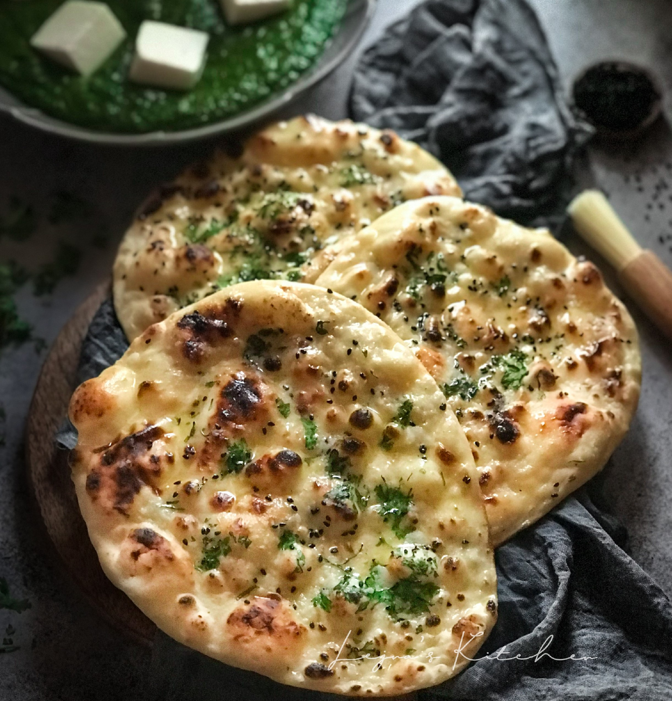

Butter Naan

Description
Naan and rich North Indian curries always make a good pair. So on days when I don't make the usual phulkas or rotis, I end up making naans.
Easy to make are these light and soft Indian breads. Naan are always made with all purpose flour/maida. yet the same soft texture can be achieved with whole wheat flour. I have used the regular chapati atta for making these naans.
Generally, butter naan which we get in restaurants is slathered with butter. I always add some butter in the dough and then spread some butter on the top of the naan, while serving.
Usually naans are cooked in tandoor (clay ovens). At home you can cook grill them in an oven or cook them on a tava/griddle. Since we prefer burnt spots on the naan, I always cook the naan partly on fire. Though this is optional and you cook the naan on the tava completely, like we cook chapatis.
List of Ingredients
- 3 cups whole wheat flour
- 1 tablespoon sugar
- ½ teaspoon instant yeast
- 1 cup water or as required
- 3 to 4 tablespoon Curd (yogurt)
- 2 tablespoon softened butter, unsalted or salted
- ¾ teaspoon salt or as required
- ▢ butter as required for spreading on the naan
Steps to make
Making the Dough
- In a bowl, take the instant yeast, sugar. Add water and stir the mixture.
- Then add 1 cup whole wheat flour and stir or whisk it with the rest of the yeast mixture.
- Cover and keep aside to leaven for 40 to 45 minutes.
- Then add the remaining whole wheat flour, salt, butter and curd/yogurt. Knead to a soft and smooth dough.
- If the dough become sticky, add a few tbsp of flour and knead again. If its dry, then add some more water.
- Cover the naan dough and keep aside for 25 to 30 minutes.
- Divide the dough into medium balls.
- Give a resting time for the dough balls for about 15 to 20 minutes. Cover and keep aside.
Rolling the Butter Naan
- Lightly dust the dough balls with some flour.
- You can also sprinkle some sesame seeds or nigella seeds on the dough ball and then roll it.
- Roll into a small to medium sized rounds/rotis of medium thickness.
Cooking the Butter Naan
- Place the naan on a hot tava or griddle.
- When the bottom is partly cooked, flip. You will see bubbles on the naan.
- When the second side is cooked, remove the naan with a pair of tongs and place the side which was cooked first facing the fire.
- The naan will puff up. Flip and brown the naan.
- Place the hot naan in a roti basket or casserole. Spread some butter on top.
- Make all naan this way. If not serving straight away, then stack them in the roti basket.
- Or else you can serve these butter naan immediately.